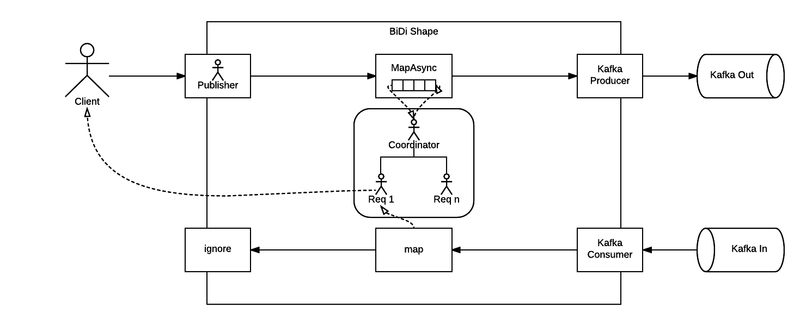

Client Architecture
Overview
The Reactive System client offers an interface ReactiveClient that encapsulates the implementation and makes simple to the final user to interact with a Reactive Service.
The actual implementation of the client is based on Akka actors and streams.
Stream Blueprint
The following diagram illustrates the Stream Blueprint for processing the incoming requests.

Request Flow (Left-To-Right)
- [ 1 ] Whenever a request comes in, the Reactive System client spawns an actor by using the Ask pattern which sends a message to the Stream’s Publisher and awaits for a response.
- [ 2 ]. The Publisher wraps the request together with the reference to the ask-pattern-actor as a
StreamRequestWithSenderand emits it downstream. - [ 3 ] The request will get into a mapAsync stage which is the integration point with the Actor-Per-Request, which will:
- Unwrap the
StreamRequestWithSendermessage to hold the reference to the original ask-pattern-actor, which will be completed on the right-to-left flow. - Forge a
KafkaRequestEnvelopefor the request and sends it back to the mapAsync stage to be sent downstream.
- Unwrap the
-
[ 4 ] Sends the request through a Kafka Producer stage.
[ 4.1 ] When a one-way-message is sent to Kafka, this stage will send a
SendMessageCompleteto the Actor-Per-Request once the message is confirmed to be written in Kafka. That way the reply to the initial ask-pattern-actor can be sent straight away.
Response Flow (Right-To-Left)
- [ 5 ] The flow starts from a Kafka Consumer stage when a response is received and decoded as a
KafkaResponseEnvelopeand emits it downstream. -
[ 6 ] The response gets into a map stage which will send it to the Actor-Per-Request and emits
Unitdownstream.Is responsibility of the Actor-Per-Request to reply to the initial ask-pattern-actor in order to complete the original request.
- [ 7 ] The sink just ignores what comes from the flow as the responsibility of completing the request has been leveraged to the Actor-Per-Request.
Actor-Per-Request Pattern
In a nutshell, the client will use an actor-per-request pattern in order to deliver the request and await for its response.
The actor-per-request approach is implemented using Akka actors and its hierarchy consists of a parent Coordinator-Actor which creates and supervise one or many Request-Actor’s.
Coordinator Actor
Apart from supervising its children, the coordinator actor have two differentiated set of responsibilities:
When receiving requests: * Accepts the incoming requests. * Generates a unique correlationId for each request. * Spawns a child actor that will be in charge of a particular request. * Tranforms the incoming request into a KafkaRequestEnvelope ready to be sent to Kafka and sends it downstream.
When receiving responses: * Accepts the responses. * Based on the correlationId of the response, it looks for a child Request-Actor awaiting for the response and forwards the response to it.
Request Actor
The main responsibility of a Request-Actor is to complete or time-out the request-cycle.
When created, it’s passed the source ask-pattern-actor reference to complete the cycle upon response reception and schedules a timeout in case the response is not received in a timely manner.